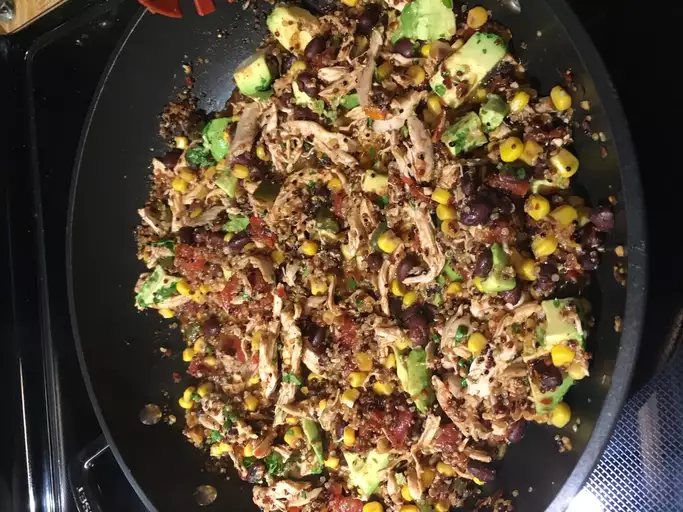

Mexican Quinoa

This Mexican quinoa dish is one of those one-skillet recipes that's perfect for feeding a large family. And the kids love it! Serve it for Cinco de Mayo or any night of the week.
Ingredients
- 1 tablespoon olive oil
- 1 medium jalapeno pepper, chopped
- 2 cloves garlic, chopped
- 1 (15 ounce) can black beans, rinsed and drained
- 1 (14.5 ounce) can fire-roasted diced tomatoes
- 1 cup yellow corn
- 1 cup quinoa
- 1 cup chicken broth
- 1 cup chicken broth
Directions
Step 1
Heat oil in a large skillet over medium-high heat. Sate jalapeno pepper and garlic in the hot oil until fragrant, about 1 minute.
Step 2
Stir black beans, tomatoes, corn, quinoa, and chicken broth into the skillet. Season with pepper flakes, chili powder, cumin, salt, and black pepper; bring to a boil.
Step 3
Cover the skillet with a lid, reduce heat to low, and simmer until quinoa is tender and liquid is mostly absorbed, about 20 minutes.
Step 4
Add avocado, lime juice, and cilantro; stir until combined.